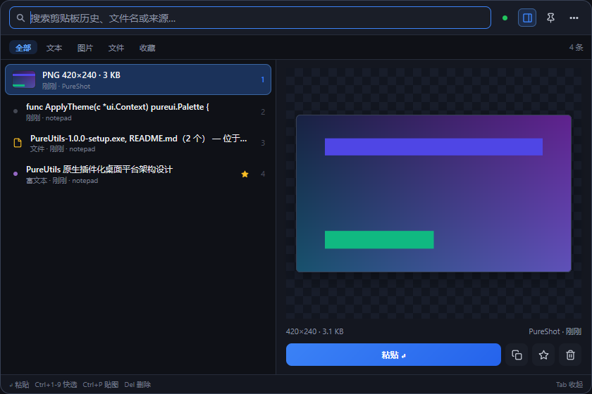

01 · PureClip
呼出即搜的剪贴板历史
提供精简浮窗与双栏详情两种视图，呼出瞬间自动聚焦搜索框；直接键入关键词即可在本地历史中完成即时多词过滤。
- 文本、富文本、图片与文件路径分栏筛选与星标收藏
- 大图与列表缩略图后台解码缓存，打字翻页不卡顿
- 支持忽略密码管理器等隐私进程，支持一键用 PureImage 查看大图或贴到桌面
Ctrl+Shift+V
Ctrl+1–9
Tab
